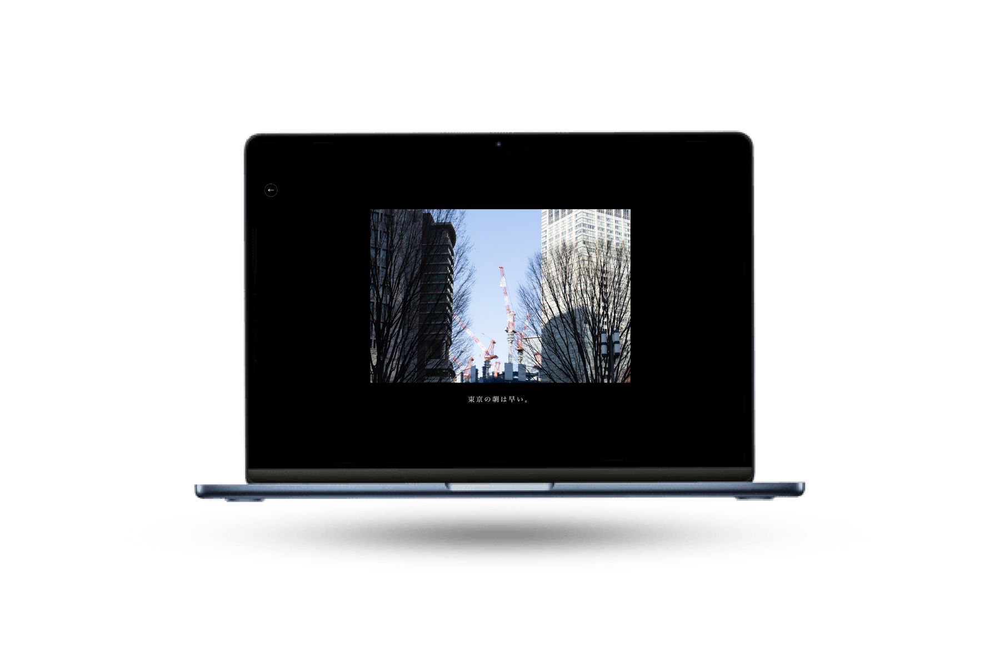

どこか歪んだノイズのように街の中に漂っている。
Concept
東京という都市では、毎日同じような光景が繰り返されている
朝、駅へ向かい、電車に乗り、同じ時間に同じ場所へ向かう人々。
それはあまりにも当たり前の風景であり、 誰も疑うことなく受け入れている「日常」である。 しかし、その風景を少し離れた視点から見たとき、 そこには言葉にできない違和感が残っているように感じた。
疲れた表情の通勤者、満員電車の静かな圧迫感、 交差点を埋め尽くす無数の人の流れ。
それらは日常の一部でありながら、 どこか歪んだノイズのように街の中に漂っている。 本作品では、その「日常に潜むノイズ」をテーマに、 東京の風景を写真でWebという空間の中に再構成した。 普段は見過ごされてしまう瞬間を切り取り、ノイズとして重ねていくことで、 都市のもう一つの側面を浮かび上がらせる。 この作品は、東京という都市を批判するためのものではない。
むしろ、私たちが無意識に受け入れている日常を、 もう一度静かに見つめ直すための装置である。 このサイトを通して、鑑賞者には 東京の風景をゆっくりと歩くように体験してほしい。
そして、その中に潜む小さな違和感やノイズに気づいたとき、 見慣れたはずの都市の景色が、少しだけ違って見えることを願っている。

Webという媒体で制作する授業の中で、その性質を活かすことを考えた。Webでは、鑑賞者が自分でカーソルを動かし、ページをスライドさせていく。この動き自体が、一種のインスタレーションになるのではないかと考えた。 自分の生活は、慣れてしまうと一歩引いて観察することが難しい。だからこそ、東京の街を散歩するような感覚で、当たり前の日常を少し離れた視点から体験できる形にした。作品は五章に分かれ、家を出て電車に乗り、帰宅するまでの一日の流れで構成している。 撮影したのは特別なものではなく、「東京ってこんな感じ」という当たり前の風景である。嫌だけれど仕方がないと受け入れていることを、もう一度捉え直せるような写真を選んだ。慣れているだけで、それは本当にあるべき姿なのだろうか。 作り終えて、全員がこの冷たさや嫌な感覚を抱えているわけではないとも感じた。ノイズは街の中に最初からあるのではなく、慣れた日常から一歩引いたときに、初めて立ち上がるものなのかもしれない。